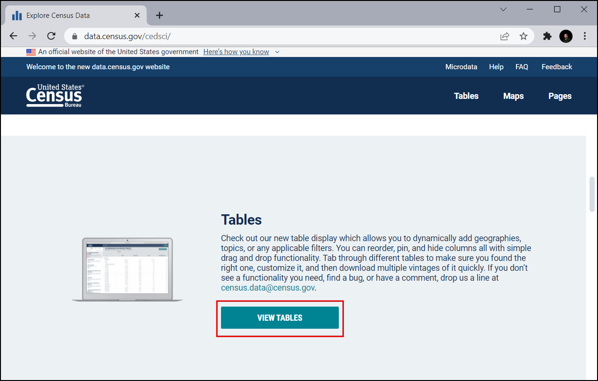
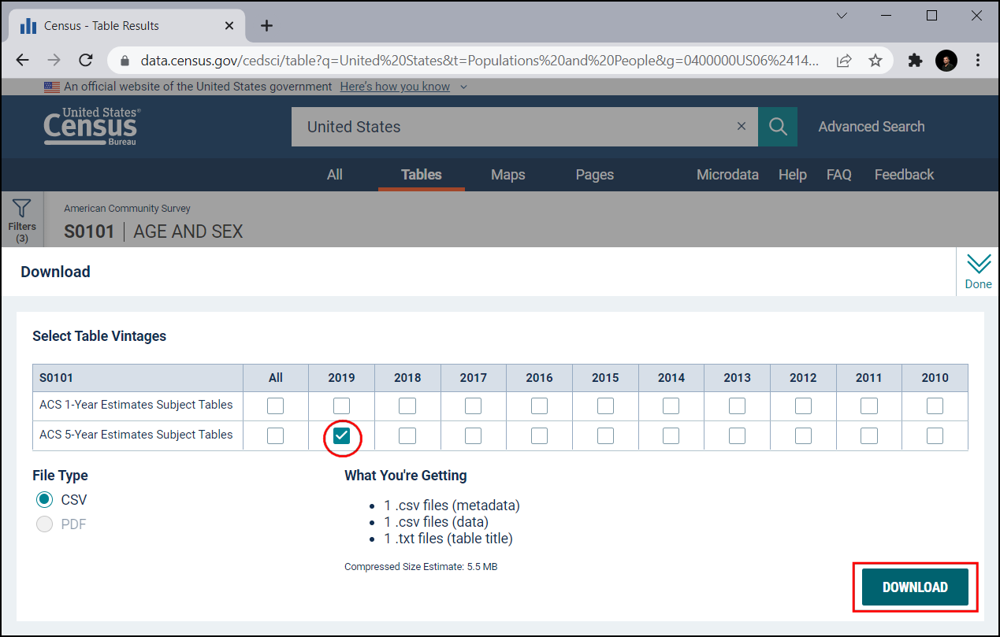
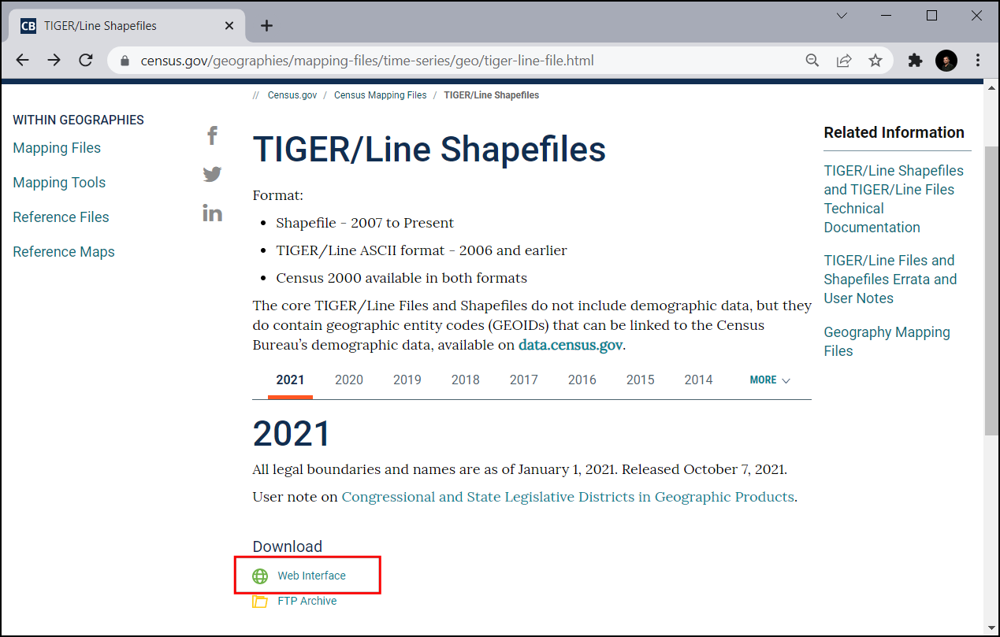
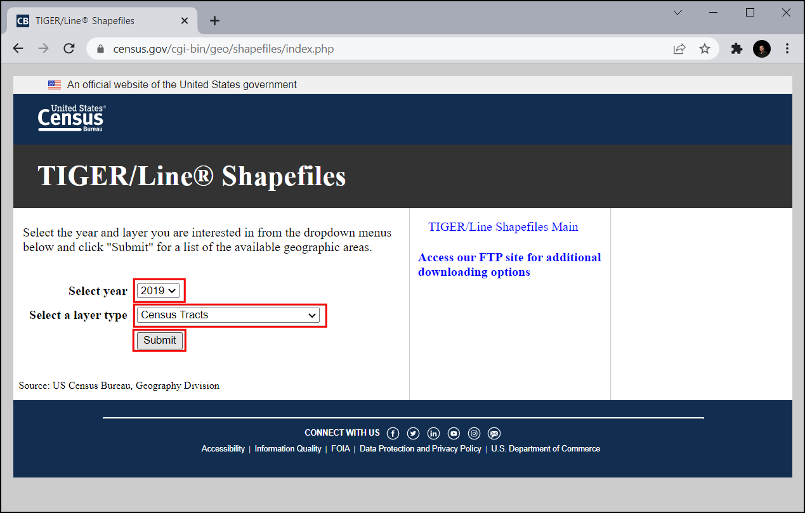
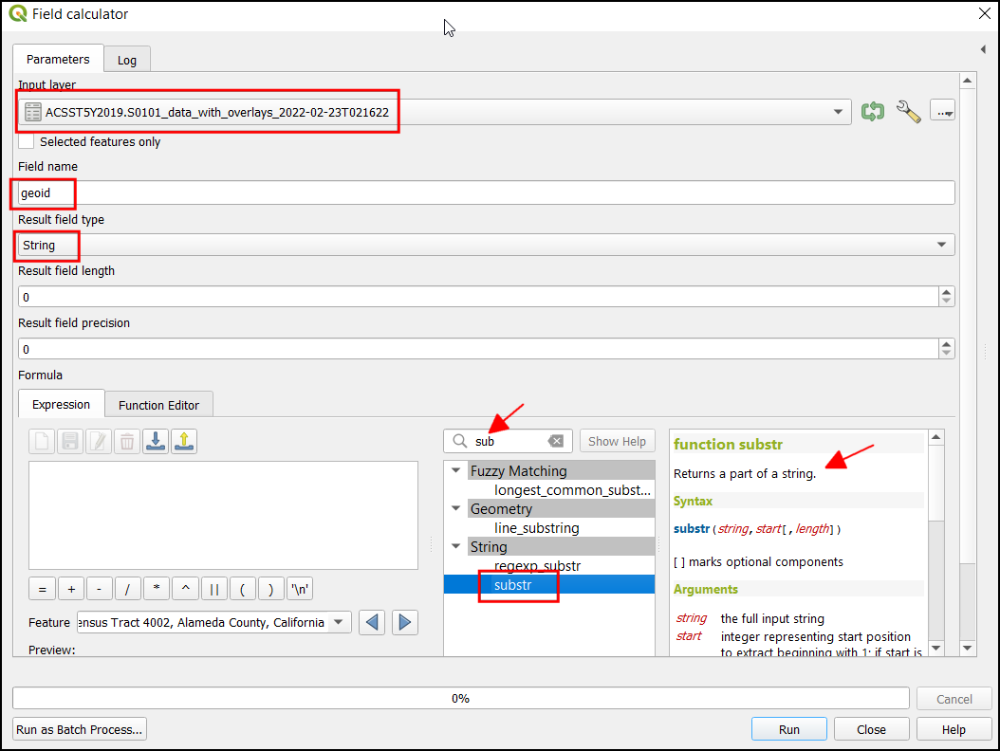
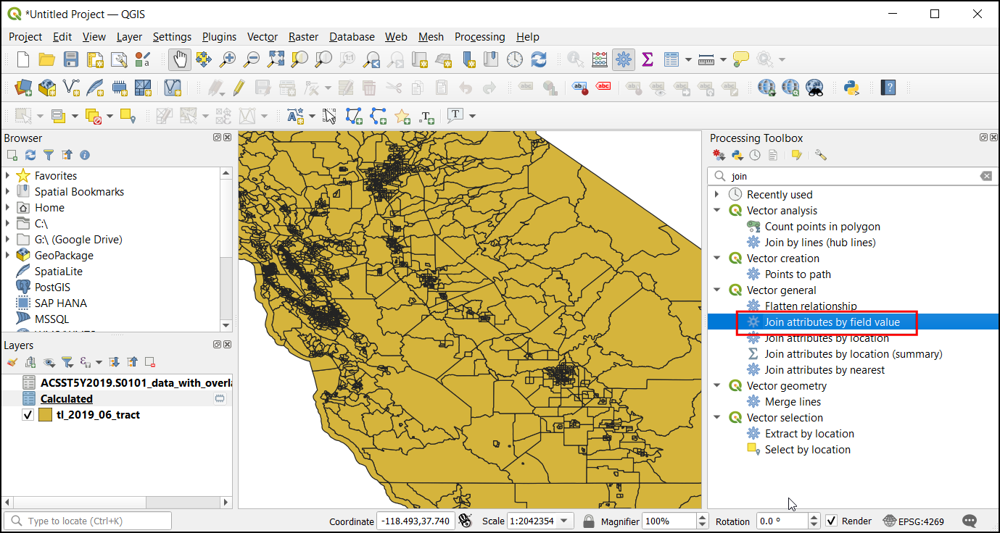
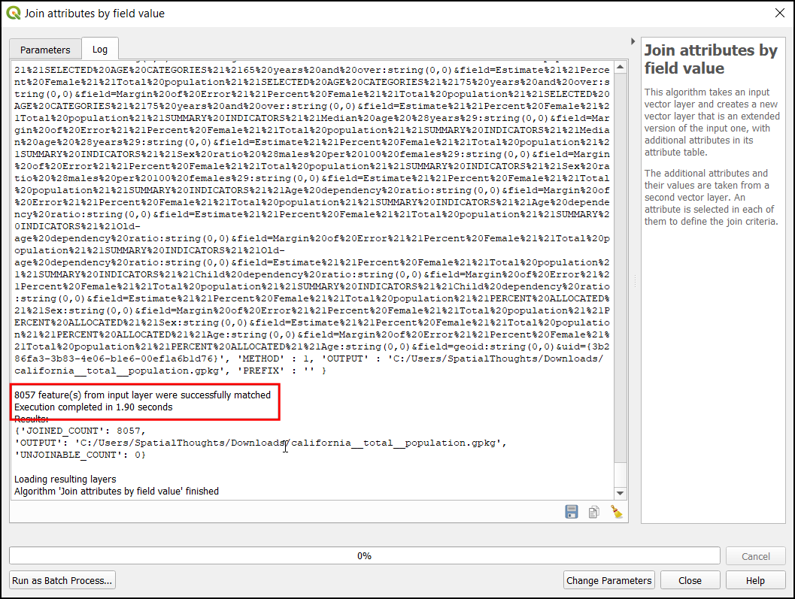
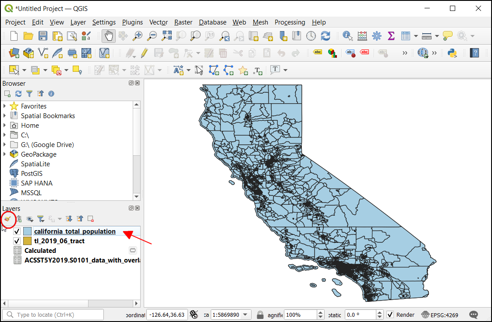
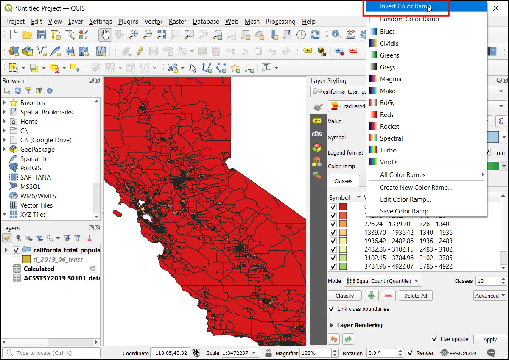

Ujaval Gandhi
Ujaval GandhiZdruževanje tabel (QGIS3)¶
Ni vsak podatkovni set, ki ga želite uporabiti, dan v prostorski obliki, ampak je pogosto na voljo samo v tabelarični obliki, kot CSV, TSV datoteka ali preglednica. Za uporabo v analizah jih morate zato najprej združiti z obstoječimi prostorskimi podatki. Ta operacija je znana pod imenom Table Join in se izvede z orodjem Join attributes by field value, ki ga najdete med orodji v Processing algorithm Toolbox.
Pregled naloge¶
Za izdelavo karte, ki prikazuje gostoto prebivalstva v Kaliforniji, bomo uporabili vektorski sloj, shapefile, popisnih enot za Kalifornijo in tabelo s podatki o prebivalstvu iz ameriškega urada za popis prebivalstva.
Česa se bomo še naučili¶
Kako v QGIS naložimo datoteke CSV, ki ne vsebujejo geometrije.
Brisanja dodatnih glav v CSV datoteki.
Dodajanja dodatnega stolpca v sloj.
Oblikovanja prosojnega sloja.
Pridobivanja podatkov¶
Pripraviti želimo karto gostote prebivalstva za zvezno državo Kalifornijo v ZDA. Najprej bomo pridobili tabelo, ki prikazuje število prebivalstva za vsako popisno enoto v zvezni državi.
Prenesi tabelo popisa prebivalstva¶
Obiščite US Census Bureau in kliknite VIEW TABLES.

V zgornjem levem kotu kliknite na ikono Filters.

Najprej nastavite filter za Kalifornijo. Kliknite na Geography.

Kliknite na Tract, ki prikaže informacije o popisni enoti.

Izberite California.

Preverite All Census Tracts within California. Slednje vam omogoča prenos vseh informacij v eni datoteki, namesto da prenašate datoteke ločeno za vsako popisno enoto posebej. Ko izberete območje, kliknite Topics.

V razdelku Select Topics izberite Population and People.

Preverite Population and People. Zdaj ste izbrali vse potrebne filtre. Zaprite okno s filtri.

V podoknu Download tables se pomaknite navzdol in poiščite S0101 | AGE AND SEX

To vam omogoči podroben pogled podatkov. Zanima vas samo populacija, zato izberite Margin of Error in prihranite prostor za shranjevanje datotek.

Kliknite gumb Download.

Izbrani podatki so na voljo za več let in so določeni z različnimi tehnikami ocenjevanja. Priporoča se uporaba ACS 5-Year Estimate Subject Tables, saj večletne ocene izboljšajo zanesljivost podatkov. Prav tako nimajo podatkovnih vrzeli in vsebujejo informacije za vse popisne enote. Izberite leto
2019in kliknite Download. S tem prenesete zip datoteko, ki jo razširite na lokalnem disku.

Prenesite meje popisnih enot¶
Za izdelavo karte iz popisne tabele potrebujemo tudi meje, ki predstavljajo vsako popisno enoto v zvezni državi Kalifornija.
Obiščite TIGER Line Shapefiles in kliknite Web Interface.

V razdelku Select year izberite
2019, v razdelku Select a layer type izberiteCensus Tractsin kliknite Submit.

V razdelku Select a State izberite
Californiain kliknite Download`. S tem boste prenesli zip datoteko z vektorskimi sloji.

Zaradi priročnosti lahko kopijo obeh zbirk podatkov neposredno prenesete s spodnjih povezav:
Vir podatkov [TIGER] [USCENSUS]
Postopek¶
V brskalniku QGIS poiščite datoteko
tl_2019_06_tract.zipin jo razširite. Izberite datotekotl_2019_06_tract.shpin jo povlecite v glavno okno.

V pogovornem oknu Select Transformation se pojavi poziv za pretvorbo iz EPSG:4269 v EPSG:4326. Tam je predstavljenih več transformacij za pretvorbo koordinat med izbranima projekcijama. Pustite privzeto izbiro in kliknite OK.

Med podatkovnimi sloji Layers boste videli naložen sloj
tl_2019_06_tract. Ta sloj vsebuje meje popisnih enot v Kaliforniji. Z desno tipko miške kliknite na slojtl_2019_06_tractin izberite Open Attribute Table.

Preučite atribute sloja. Za povezavo tabele z izbranim slojem potrebujete unikaten in obema skupni atribut izbranega elementa. V vašem primeru je v atributnem polju
GEOID8057 posameznih vrednosti. S tem stolpcem lahko povežete izbran sloj s katerim koli drugim slojem ali tabelo, ki vsebuje isti ID.

Če želite naložiti tabelarne podatke, kliknite Open Data Source Manager.

V pogovornem oknu Data Source Manager izberite Delimited Text. Nato na desni strani kliknite na
...v File name in poiščite razširjeno mapo s CSV datoteko o prebivalstvu Kalifornije.

Še preden podatke naložite kot nov sloj jih s:guilabel:Sample Data pregledate. Iz prikaza je razvidno, da podatkovna tabela vsebuje glavo z 2 vrsticama.

Če želite odstraniti dodatno vrstico glave, v razdelku Record and Fields Options nastavite Number of header line to discard na
1. Zdaj bo tabela vsebovala stolpce s pravilno glavo. Ker ta sloj vsebuje samo tabelarne podatke, v razdelku Geometry Definition izberiteNo geometry (attribute only table). Kliknite Add, da jo dodate kot sloj, in nato kliknite Close, da pogovorno okno tudi zaprete.

CSV datoteka se bo v QGIS uvozila kot tabela in bo prikazana kot
ACST5Y2019.S0101med:guilabel:Layers. Z desnim klikom na sloj in možnostjo Open Attribute Table odprite podatkovno tabelo.

Stolpec
IDvsebuje unikatno identifikacijsko številko za vsako posamezno vrednost, ki se lahko uporabi za povezavo izbrane tabele s slojemtl_2019_06_tract. Če vrednosti stolpcaIDprimerjate s stolpcemGEOIDiz slojatl_2019_06_tract, boste opazili, da ima predpono 1400000US. Za uspešno združitev izbranih tabel se morata vrednosti natančno ujemati. Imenu odstranite predpono in dodate nov stolpec z zadnjimi 11 znaki, ki vsebujejo vrednost, katera se ujema.

Če želite ustvariti nov stolpec z zadnjimi 11 številkami, odprite zbirko orodij tako, da izberete in poiščete orodje .

V pogovornem oknu Field calculator izberite
ACST5Y2019.S0101kot Input layer, vnesitegeoidv Field name in izberitestringv Result Field type. Zdaj med izrazi poiščitesubstr. To funkcijo uporabite, ko želite iz obstoječega imena izvleči le želeni del imena.

Vnesite spodnji izraz. Uporabite funkcijo substr in izvlecite želeno vrednost s položaja -11 (negativna vrednost se začne šteti na koncu). Končni rezultat si ogledate v razdelku Preview. Kliknite Run.
substr("id", -11)
Zdaj se bo na karto naložil nov sloj
`Calculated, kjer si oglejte atributno tabelo. Dodan bo nov stolpecgeoidz vrednostjo, ki se ujema s prikazanimi popisnimi enotami.

Za združitev tabel, odprite zbirko orodij tako, da izberete in poiščite orodje .

V pogovornem oknu Join attributes by field value izberite
tl_2019_06_tractkot Input layer inGEOIDkot Table field. IzberiteCalculatedkot Input layer 2 ingeoidkot Table field 2. V razdelku Layer2 za kopiranje kliknite na....

Preverite
Geographic Area Name,Estimate!!Total!!Total populationingeoid. Kliknite OK.

S Discard records which could not be joined preverite nezdružljive vrednosti. S tem izločite vse dodatne vrednosti v populacijski tabeli. Kliknite gumb … joined layer, da izberete lokacijo izhodne datoteke in
Save to File....

Ime izhodnega sloja, ki je v formatu geopackage, je
california_total_population.gpkg. Kliknite Run.

Po končani obdelavi preverite, kako uspešen je bil algoritem in če je pravilno združil vseh 8057 vrednosti. Kliknite Close.

Med odprtimi sloji Layers se bo naložil nov sloj
california_total_population. Na tej točki so polja iz CSV datoteke združena s slojem popisnih enot. Zdaj, ko imate podatke o prebivalstvu v sloju popisnih enot, jih lahko oblikujete tako, da ustvarite vizualizacijo porazdelitve gostote prebivalstva. Kliknite gumb Open the Layer Styling Panel.

V Layer Styling izberete
Graduated. Ker želite izdelati karto gostote prebivalstva, morate vsakemu elementu popisne enote dodeliti drugačno barvo glede na gostoto prebivalstva. Prebivalstvo imate v polju Estimate!!Total!!Total population, območje pa v polju ALAND. Kliknite gumb Expression, da izračunate odstotek celotnega prebivalstva v vsakii popisni enoti.
Opomba
Pri ustvarjanju tematske karte, je pomembno, da vrednosti, ki jih prikazujete, normalizirate. Prikazovanje skupnega števila na poligon ni pravilno. Pomembno je, da vrednosti normalizirate tako, da jih delite s površino. Če prikazujete skupne vrednosti, kot je kriminal, jih lahko normalizirate tako, da jih delite s skupnim številom prebivalcev in tako prikažete stopnjo kriminala in ne le kriminala. Več na

Za izračun gostote prebivalstva vnesite naslednji izraz. Površina elementa je podana v kvadratnih kilometrih. Pretvorite jo v kvadratne metre tako, da jo pomnožite z
1000000in izračunajte gostoto prebivalstva po formuli Populacija/Area. Oglejte si rezultat in kliknite OK.
1000000 * ("Estimate!!Total!!Total population"/"ALAND")
V podoknu Layer Styling Panel kliknite classify in vnesite število razredov
10.

Kliknite na barvno lestvico in izberite
RdYlGn.

Območja z večjo gostoto so bolj obremenjena, zato z zeleno barvo prikažemo območja z manjšo gostoto, z rdečo pa območja z visoko gostoto prebivalstva. Kliknite na barvno lestvico in izberite Invert Color Ramp.

Pred vami je odlična vizualizacija gostote prebivalstva v Kaliforniji. Da bo izgled karte še lepši prikažite meje popisnih enot prosojne. Kliknite na the Symbol tab.

Kliknite na Stroke color in kliknite
Transparent stroke.

Barve lahko prilagodite s klikom na Values, kar vam omogoča vnos zgornje in spodnje mejne posameznih vrednosti.

Ko ste z izbiro zadovoljni lahko pogovorno okno za oblikovanje slojev zaprete. Pred vami je čudovita karta, ki prikazuje gostoto prebivalstva v Kaliforniji.

If you want to give feedback or share your experience with this tutorial, please comment below. (requires GitHub account)